01
/ The brief
Stop the scroll in the first second.
Hyper-casual and casual game ads have to land the hook before the user's thumb is halfway to the swipe. The work below was made under that constraint — every cut, beat, and reveal exists to push CTR, hold rate, IPM, CPI, CPA, and ROAS signals in the right direction across millions of impressions.
The approach is performance-first: build a readable hook, hold attention with a simple escalation, make the CTA obvious, and use talent acquisition or character-led moments only when they improve the KPI story instead of decorating the ad.
Kwalee · 2 years in-house
Two years as in-house motion designer shipping creatives for Tens!, Queens Master, Dream Build Solitaire, Hunt & Seek and the wider Kwalee catalogue. Mix of fake-fail hooks, satisfying win loops, UGC-style cuts, and end-card variants tuned for CPI and IPM.
Also built a playable version of the top-performing Dream Build Solitaire ad — Unity-built playable mirroring the looped After Effects animation of the source creative, so the network-side playable matched the winning video creative beat-for-beat.
Zynga · FarmVille 3
3D motion creative for FarmVille 3, built end-to-end from scratch — including self-recorded reference footage for character timing, gestures, and animation beats. Full pipeline: live reference → blocking → 3D animation → comp → final cut.

Voodoo · Cup Heroes
Creative for Cup Heroes built on top of a deep competitive analysis of the strongest-performing ads across the casual sports/idle space — distilled into hook structures, hold escalations, and CTA framings that were already proven on the network before we shot a frame.
TapNation · Hero Making Tycoon
Creative for Game Hero Making Tycoon — tycoon-loop showcase with character-driven hook, escalating progression beats, and a CTA framed inside the game fantasy instead of a slapped-on end card.
02
/ The approach
Concept first. Polish second.
Every variant starts as a 30-second whiteboard idea — what's the hook, what keeps the hold, where does the payoff land, and when does the CTA enter. Only once that beat sheet feels testable do I open After Effects. That order matters: a beautifully animated bad idea still loses to a rough animation with a good hook.
Hook. Start with conflict, curiosity, fail-state, impossible choice, or a satisfying transformation that can be understood with sound off.
Hold. Keep the viewer through escalation: clearer stakes, faster cuts, UI feedback, progress bars, character reactions, or a near-miss loop.
CTA. Make the action button feel native to the game fantasy — not a slapped-on end card — so the final frame still sells the play pattern.
Talent acquisition. When live-action or creator-style footage is involved, the talent brief is built around gesture clarity, expressive first frames, and readable reactions that survive a 9:16 crop.
03
/ The outcome
Creatives that survive Meta's first 48 hours.
The bar for "shipped" on these accounts isn't the render — it's surviving the first ad-set rotation against five other variants. Concepts that came out of this pipeline consistently moved beyond the test phase into spend at scale.
/ Want the full reel?
Motion Showreel '26
The condensed reel on YouTube includes Kwalee / Zynga / Voodoo / TapNation cuts alongside everything else.